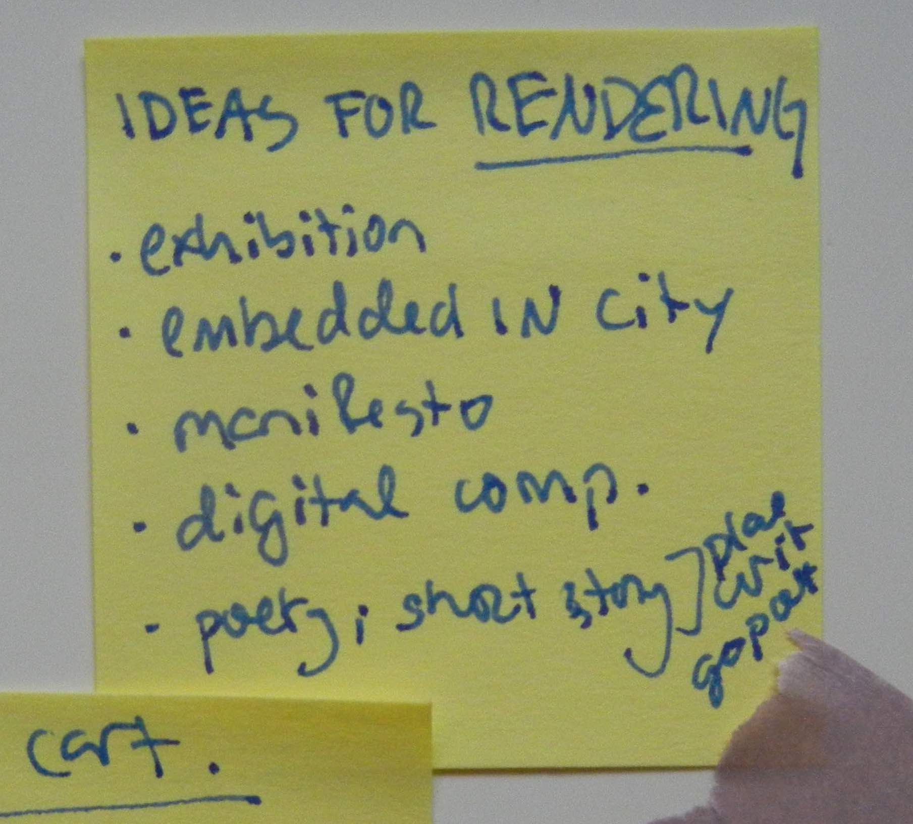
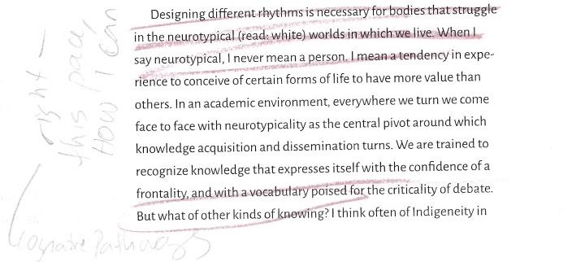

site 1 scan of marked-up passage from Roberts, Les. Spatial Anthropology: Excursions in Liminal Space. Rowman and Littlefield, 2018.
Rendering is a creation practice aimed at documenting something in some way so as to share it with others. How, then, might knowledge generated through everyday spatial practices be rendered without being flattened, georeferenced, or vectorized? In other words, how might the effect of interferences be marked while accounting for the apparatus of their production? This page is an account of the form and formation of negative-spaces — the website which marks the effects of my deep mapping practice and constitutes the contents of what I submit as my master's thesis in geography. The archival of negative-spaces within UBC's institutional repository will performatively render my research-creation output legible as an MA thesis. In what follows, I articulate how making this space for deep mapping renders theory as praxis. In doing so, I attend to the exclusions entailed in defining the form of my research output and rendering it intelligible to the sociotechnical system of institutional graduate publishing.
INSTITUTIONAL FORMALITIES
I submit as my master of arts (MA) thesis in geography a file entitled ubc_2024_november_crandalloral_lilydemet_negative-spaces.zip. What's in a filename turns out to matter quite a bit to the powers that be. Consequently, the following section will break down the filename's concatenation to show how my submission interferes with formal convention. cIRcle (circle.ubc.ca) is the institutional repository for The University of British Columbia (UBC) where I am pursuing a Master of Arts (MA) degree in geography. The mandate of cIRcle is to preserve archived material in perpetuity (“About cIRcle,” n.d.). UBC began accepting electronic theses and dissertations (ETDs) as a pilot project in 2007 (Read and Sprout 2009), and now requires all theses and dissertations be submitted electronically to "UBC's online information repository, cIRcle" (“Final Dissertation & Thesis Submission,” n.d.). From the perspective of those spearheading the endeavor at UBC, it marked a shift from the "Dark Ages" of thesis submission and archiving to "The Age of Light" (Read and Sprout 2009). The collaboration between UBC Library and the Faculty of Graduate and Postdoctoral Studies responsible for the initiative persists today, though remains a complex sociotechnical system in which "acceptance" and "approval" of submissions is a distributed decision. This is especially true, I learned, when it comes to formats for which there is no exact precedent.
Never before in UBC's history of ETDs has there been an MA thesis consisting entirely of a website without a significant textual component submitted in .pdf form.
Deep mapping is a practice of interference, not opposition. I was therefore keen to talk with the representatives from the Faculty of Graduate in Postdoctoral Studies (GP+S) well in advance of my intended submission date, as encouraged by their online documentation (“Emerging Dissertation Approaches and Designs,” n.d.), so as to find a way for my unconventional thesis to be archived by cIRcle. At that point, I knew my thesis would take the form of a website but was unsure how this would be technically uploaded and archived by cIRcle. Because, as I will discuss in this page, the integration of text and multimedia is part of my theoretical contribution, I was unsatisfied with accommodating the status quo by submitting a .pdf of the consolidated text, and then compiling the multimedia into an appendix. Since my thesis was already taking shape as a website, I hoped GP+S could suggest ways in which my website could be archived by cIRcle whereby its formal design and interactivity would be preserved. In February 2023, I reached out to the Public Scholarship Coordinator upon recommendation by a colleague. After a brief conversation, he said he would discuss my options with relevant personnel. That summer, we scheduled a meeting with the Associate Director of Student Academic Services and my thesis co-supervisor, Dr. Luke Bergmann.
As it stood on the afternoon of July 13th, 2023, the time of our meeting, in order for UBC theses and dissertations to be accepted by cIRcle's submission platform they were required to be uploaded in the format ubc_gradyear_gradmonth_lastname_firstname.pdf ("Library:Circle/Uploading Electronic Theses and Dissertations - UBC Wiki" 1-18-2023). Given that "cIRcle can technically accept all file formats" ("Library:Circle/File Format Guidelines - UBC Wiki" 2023), upload of auxiliary multimedia was an option. Searching cIRcle's collection of MA and MSc (Master of Science) theses ("Search - UBC Library Open Collections" n.d.), I found a handful of theses with supplementary files. In addition to the conventional thesis in linear text.pdf form, archived MA theses included still images (as .gif files), moving image/audiovisual (as .m4v and .mp4 files), datasets (as .csv, .sav, .txt, and .zip files), and sound/audio (as .zip, .wav, and .mp3 files). Supplementary datasets, models, and software were more prevalent amongst MSc submissions, archived as .zip, .mp4, and, .xlsx files. However, all multimedia were submitted as secondary to a ubc_gradyear_gradmonth_lastname_firstname.pdf formatted upload.
In conversation with the Associate Director of Student Academic Services and the Public Scholarship Coordinator on July 13th, 2023, my thesis co-supervisor and I indicated hesitance over submitting any .pdf file at all since my entire thesis would be rendered by my website, to which their response was that they were "not convinced" and, more importantly, we would need to build an argument to "convince" The Faculty of Graduate and Postdoctoral Studies as to why inclusion of even a 3 to 5 page .pdf containing the thesis front matter would "damage" my thesis. Though the Associate Director of Student Academic Services and the Public Scholarship Coordinator both held positions within the said Faculty, they did not specify who would adjudicate our hypothetical argument beyond saying the ultimate decision was that of the Dean of the Faculty of Graduate Postdoctoral Studies in consultation with cIRcle. They held that the first few pages of the conventional monograph contain vital metadata. This despite the fact that my proposed website met these requirements (title page, committee page, abstracts). I also reiterated that upon the submission of an electronic thesis or dissertation, cIRcle's platform requires an abstract and metadata — including title, creator, supervisor(s), publisher, date issued, description, degree, program, affiliation, graduation date, and degree grantor — all be manually entered. The content of these fields is then displayed publicly for each archived submission alongside the downloadable thesis file(s). If both my website-thesis and the archival platform contain the vital metadata, including it in a .pdf is repetitive. It also requires a reader download, open, and read a .pdf whose only contents is the information which they will then be presented within the website-thesis. To this, the Associate Director of Student Academic Services cited convention — theses at UBC have "always" been submitted with a linear text component. Note that the Associate Director of Student Academic Services, along with the current Head Digital Initiatives Librarian, established the electronic submission of theses and dissertations through the above mentioned pilot project (Read and Sprout 2009).
The bottom line, I gathered, was that while multimedia files can technically be accepted by cIRcle's infrastructure and there is no formal rule that ETDs must be submitted with a .pdf, the linear text .pdf is what makes a submission legible, or "acceptable", to The Faculty of Graduate and Postdoctoral Studies as a graduate thesis. That is, until four hours after our conversation.
Four hours after my co-supervisor and I spoke with representatives of The Faculty of Graduate and Postdoctoral Studies, the UBC Library webpage for uploading ETDs to cIRcle, which hadn't been updated in six months, was refigured to include upload instructions and requirements which accounted for multi-file theses. The new mandate requires a .pdf file be the primary document uploaded (see site 2). All other multimedia uploads, including .zip files, are now determined to be secondary to the .pdf ("Library:Circle/Uploading Electronic Theses and Dissertations: Difference between Revisions - UBC Wiki" 7-13-2023). Below is an excerpt from the full history log of that day. Additions included the following:
site 2 Screenshot of the revisions to “Library:Circle/Uploading Electronic Theses and Dissertations made as of 18:20, 13 July 2023. A few of the additions, which can be viewed publicly by navigating to the history of the UBC Wiki page, are as follows: Your first file must contain your title page and preliminary pages, so this will always be a pdf file: ubc_gradyear_gradmonth_lastname_firstname_file1.pdf. When uploading multi-file theses, the PDF file containing your title page and preliminary pages must be the first-listed file in your submission. Subsequent file should then be submitted in order of importance as determined by your Committee. Read the full history log here.
Note that UBC Creative Arts graduates, which comprises MFA (Master of Fine Arts) and MMUS (Master of Music) students, have separate ETD upload and submission requirements than do MA and MSc students (“Library:Circle/Submitting Creative Arts Theses and Dissertations to cIRcle - UBC Wiki” 5-14-2024). It is expected that the research output for creative arts will contain some multimedia component. However, on July 18th 2023, five days after I met with the Public Scholarship Coordinator and Associate Director of Student Academic Services about uploading and archiving my thesis, the guidelines for Submitting Creative Arts Theses and Dissertations were updated to reflect the institutional position that "For multi-file theses, the PDF file containing your title page and preliminary pages must be the first-listed file in your submission. Subsequent files should then be uploaded and listed in order of importance as determined by your Committee" (“Library:Circle/Submitting Creative Arts Theses and Dissertations to cIRcle: Difference between Revisions - UBC Wiki” 7-18-2023).
What to do? As I mentioned in negative-spaces/disorientation.html, I did not begin my master's with a distinct goal or idea about the shape my thesis output would take. I first began envisioning possibilities in the spring of 2022. Among my ideas for rendering were an exhibition somehow embedded in the city, a manifesto, a digital composition, poetry or a short story. In the fall of 2022, inspired by an elementary website I made to render the final project for a counter cartographies course, I thought 'What if I made my thesis output a space'? With a caret, I corrected myself: 'What if I made my thesis output a digital space' and circled this with blue crayon (see site 3).

May 2022
September 2022
site 3 Two scans of my notes side by side. On the left, a post-it note from May 2022 that says "IDEAS FOR RENDERING" in all capital letters. Ideas, noted as bullet points, include: exhibition, embedded in city, manifesto, digital comp. (short for composition), poetry/short story/place writing/geopoetics. On the right, a cropped capture of my kraft brown paper notebook from September 2022. It says: 'What if I made my thesis output a space"? With a caret, I corrected myself: 'What if I made my thesis output a digital space" and circled this with blue crayon.
Even the following year when I first reached out to the Public Scholarship Coordinator, I didn't know how I would archive my emerging website. Indeed, that was my motive for reaching out. Well, my pragmatic impulse. My other aim in initiating a dialogue with the Faculty of Graduate and Postdoctoral Studies was to get a sense of how the institution conceived legibility, and where its limit lay. In a voice recording taken while driving the Coquihalla Highway back to Vancouver days before the meeting I said: "It's less about the specific output form of my website and more about the process of interfering with the cIRcle system from within by proposing this." This is not to say my chosen form doesn't matter, but rather, in a Baradian vein, how it has come to matter is the effect of boundary making practices. My aim in initiating dialogue was to illuminate the boundary making practices through which UBC's sociotechnical system of institutional graduate publishing makes determinate the form of an intelligible (read "acceptable") thesis. The form in which I submit my MA thesis has come to matter as the effect of the July interference, as well as many in-depth conversations with my thesis co-supervisor, Dr. Luke Bergmann. I decided to submit as my master's thesis in geography the file ubc_2024_november_crandalloral_lilydemet_negative-spaces.zip, along with a brief .pdf with the "vital" metadata. This .pdf also contains instructions on how to download and unzip the compressed file so as to access the folder negative-spaces and navigate the website its files compose. These instructions are also included in a README.txt file within negative-spaces.
site 4 Full audio recording taken on ride back before meeting, July 2023
NEGATIVE SPACES
Why locate my work in negative-spaces? The idea was inspired by a sticker on a lamppost I noticed while thinking with an intersection downtown (see site 5). It read: AVOID THE SUBJECT.
site 5 Sticker on lamppost in Gastown, downtown Vancouver, reading AVOID THE SUBJECT.
In visual art, negative space refers to that which surrounds the subject but is not the intended focus of attention. I know this concept from years of practical experience as a painter. Negative space gives definition to the intelligible form by being that which the intelligible form is not. The boundary, or difference, between intelligible and unintelligible is articulated when that which the intelligible form excludes shows up within the space of the intelligible. Negative space and intelligibility are in relation not of opposition but of complementary constitution — an entanglement I believe to be analogous to (if not the same as) Michel Foucault's rendering of limit and transgression. Foucault (1977): "transgression carries the limit right to the limit of its being; transgression forces the limit to face the fact of its imminent disappearance, to find itself in what it excludes…" (34). Like transgression, interference at once articulates difference and effects the reconfiguration of boundaries by bringing what was previously unintelligible into focus. The effects of interference, of 'differential intra-actions' (Barad 2007), are marked by diffraction patterns. As clarified in negative-spaces/interference.html, "A diffraction pattern does not map where differences appear, but rather maps where the effects of difference appear" (Haraway 1991, 70, emphasis in original). Just as the difference between human and nonhuman, or between field and researcher, do not preexist the boundary making practices by which they are rendered differentially intelligible, the boundary differentiating negative space from the intelligible form does not preexist interference but rather is illuminated as its effect. Interference, like
Transgression, then, is not related to the limit as black to white, the prohibited to the lawful, the outside to the inside, or as the open area of a building to its enclosed spaces. Rather, their relationship takes the form of a spiral which no simple infraction can exhaust. Perhaps it is like a flash of lightning in the night which, from the beginning of time, gives a dense and black intensity to the night it denies, which lights up the night from the inside, from top to bottom, and yet owes to the dark the stark clarity of its manifestation…. (Foucault 1977, 35)
The boundary of an intelligible form is rendered articulate only in its crossing. Indeed, "it is likely that transgression has its entire space in the line it crosses" (Foucault 1977, 34). Because intelligibility is provisionally figured, what constitutes negative space is continuously shifting. No predetermined set of method(s) for interference will do. As an interference practice, deep mapping relies on tactics rather than strategies. Whereas the system in authority deploys strategy to delimit and maintain the place of its positioning, "a tactic is a calculated action determined by the absence of a proper locus. No delimitation of an exteriority, then, provides it with the condition necessary for autonomy. The space of a tactic is the space of the other" (de Certeau 1984, 36-37). Operating from within negative spaces, "...a tactic boldly juxtaposes diverse elements in order suddenly to produce a flash shedding a different light on the language of a place…" (de Certeau 1984, 37-38).
Intelligibility is not a static state but the effect of boundary making practices; what constitutes negative space is therefore provisional, continuously figured and refigured in relation to the intelligible form thus construed. Just as "The limit and transgression depend on each other for whatever density of being they possess" (Foucault 1977, 34), so do negative spaces and intelligibility. Tactics are instruments/tools/techniques of interference which don't simply "juxtapose[] diverse elements" but superposition different intelligibilities — i.e., refigure what was once rendered unintelligible through its relegation to negative space (the interior other) into that of the intelligible form. Such interference effects the articulation and reconfiguration of limits/boundaries. Writes Barad (2007), "Boundary transgressions should be equated not with the dissolution of traversed boundaries (as some authors have suggested) but with the ongoing reconfiguring of boundaries" (245). Locating my thesis in negative-spaces brings to the fore forms of knowledge production and rendering public of spatial research that are institutionally rendered outside the norm. And, in doing so, negative-spaces enacts an interference which redraws the definition of possibility. It's not one against another (opposition) but a Baradian 'intra-action' which reveals the limit through the transgressive act of proposing alternative framings. This is the work of reconfiguring boundaries. It is to the configuration and configured form of my thesis, negative-spaces that I now turn.
FORMAL RE/CONFIGURATIONS
The filetype of ubc_2024_november_crandalloral_lilydemet_negative-spaces.zip is .zip, meaning my submission is a compressed folder. In the case of my thesis, the compressed (zipped) folder contains files of heterogenous types (.html, .css, .md, .txt., .png, .jpeg, .jpg, .mp3, .mp4, .ttf, .zip, .pdf) sorted into additional folders. The .zip format therefore assembles a multitude of files into one element. Once archived by cIRcle, to explore my MA thesis a visitor will need a computer, internet connection, and web browser — all agencies of observation required to access cIRcle in the first place. From circle.ubc.ca, the repository's public-facing graphical user interface (GUI), a visitor could then navigate to UBC Theses and Dissertations where they could find my thesis by querying metadata such as my name (Lily Demet Crandall-Oral), my program (Geography), or my degree (MA). They could then review my abstracts and download ubc_2024_november_crandalloral_lilydemet_negative-spaces.zip. Once downloaded, the .zip file is located "locally" on a visitor's personal computer. This as opposed to it being stored "remotely" on cIRcle servers.
The .zip folder is a "release" — a version in time or instantaneous configuration of the assorted files constitutive of the website negative-spaces.github.io, hosted by Github. Github is a platform conventionally used for managing code development for software projects. It is a popular site for teamwork because collaborators can work asynchronously on a project by "cloning" it to their local device and then "pushing" their changes "upstream" to the remote project hosted by Github. Github integrates git, a version control software which allows users to track changes made to files and handle complex merges of multiple ‘branches’ (versions of the project), i.e., cases where multiple collaborators push changes to the same project files. An advantage of Github is that github.io can be enabled to automatically render the contents of a repository into a website.
I was initially inspired to appropriate the conventional use of Github having visited sultanazana.github.io, whose "network of webpages will grow more tangled with time" (Zana n.d.). I also chose Github as the host platform for the development of my thesis website because it provided a means to render visible the iterative process of my site's formation. While the website located at negative-spaces.github.io will remain as long as Github exists, I made the decision to submit as my thesis as a release of the site so that what counts as my thesis is materially archived within cIRcle, instead of being a link to some external location. However, drawing this boundary means the "commit history" — an archive of each document as it was changed and a diffraction pattern marking the site's iterative formation — is not included as part of my formal thesis submission. However, this element of process can still be accessed at github.com/negative-spaces/negative-spaces.github.io/commits/main for those curious.
Once downloaded, the contents of a zipped folder are not immediately accessible. As you may know from practical experience, in order to access the contents of a .zip file you must first "unzip" or otherwise extract the compressed folder. A now-common way to do this is to right-click the .zip file and choose an extraction software with which to unzip the file. You may also be able to simply double-click the .zip folder to unzip it. The extracted folder is named negative-spaces. The folder negative-spaces contains the .html documents which, once read by web browsers, render what's read by browsers of my web site. It also contains the Cascading Style Sheet (.css file) responsible for the rendered look and feel of my website. Images, video, and audio files are organized into subfolders of negative-spaces, linked by specific file paths that embed them as relevant throughout the eight .html pages. From the access instructions archived in the .pdf alongside ubc_2024_november_crandalloral_lilydemet_negative-spaces.zip: negative-spaces is a partial account of an ongoing and open-ended conversation, one which invites the visitor to engage as interlocutor. How, then, might one enter into dialogue?
Visitors are instructed to right-click the file index.html and "open with" their default web browser. In this way, my thesis is 'intra-actively' (Barad 2007) rendered. While negative-spaces constitutes an instantaneous configuration of files, each with a necessarily distinct location and name, navigation spatializes it, producing a webbed site itself a space for nonlinear exploration following ideas that grasp and pull the visitor. For evaluating supervisors and those desiring a guided tour, I have ordered the menu navigate elsewhere>> top-to-bottom by my recommended navigation.
Upon 'intra-active' (Barad 2007) production of negative-spaces, visitors will find multimedia, rather than relegated to secondary material or the appendix of a .pdf, integrated amidst text on each page. As Clifford McLucas (2000) said, what's rendered of deep mapping "will be genuinely multimedia, not as an aesthetic gesture or affectation, but as a practical necessity." Rendering my research by way of a digital medium allows me to build for a variety of creative syncretisms. Drawing inspiration from Tim Cresswell, I employ tactics of writing place such as parataxis (placing elements side by side), montage (juxtaposition of disparate elements), and commonplacing (an arrangement of resonant quotes) (Cresswell 2019). Take for example my page on practice, negative-spaces/practice.html, which traces my theorization of deep mapping by setting up a dialogue between the physical and conceptual fields of my encounter. I format this conversation as a digital commonplace: embedded on the left are multi-media passages from the physical-conceptual fields of my encounter; on the right, interpretations of deep mapping generated through navigations within and as part of them. The digital commonplace is itself one half of an open-ended dialogue, wherein the visitor is invited to create a digital commonplace of their own in the "asides" panel. The form of negative-spaces/practice.html is therefore akin to my practice of deep mapping. The visitor-as-interlocutor is invited to think through practice in order to arrive at a situated theory, and to do so in the form of a dialogue. Form thus becomes a site of praxis.Form matters.
SITATION: CITING SITUATED PRACTICES as MULTIMODAL KNOWLEDGES
Citation is a form of address, a formal acknowledgement of an other within the written conversation of an academic text. Mott and Cockayne (2017) call for conscientious engagement in citation as a performative practice for resisting "hegemonies of knowledge production and authority" within the neoliberal university that reify white, cisgendered, heteromasculinist narratives (959). They do not mention disableism. Their audience is other professors (citing narrowly, they write, does a disservice to "our students"). What does conscientious engagement mean for graduate students, especially master's students like myself who come to human geography from physical geography or who are entirely new to a discipline? When choosing what to read (this already presupposes a clear understanding of what a project is about), how does one account for time constraints, for expectations on bibliography length and breadth over depth? Conscientious engagement might also include mention of how one happened upon a text (Was it required reading? An interlocutor's recommendation? A serendipitous find?), and whether it was read deeply or perfunctorily. Additionally, Mott and Cockayne (2017) focus on the content of bibliographies rather than the form of citation. Challenging content-oriented interdisciplinarity, Natalie Loveless (2019) suggests a 'polydisciplinamorous' ethic that attends to the ways in which one's research forms kinship ties. Conscientious engagement should not only be about whom we cite but how. I suggest the form of in-text citation to be a site as well as tactic for interfering with what Mott and Cockayne (2017) identified as "hegemonies of knowledge production and authority" (959) in academia.
Throughout the pages of negative-spaces, instead of transcribing block quotes from books and printed articles, I've scanned my marked-up readings and embedded them in the page so as to trace my process of thinking together with the fields of my encounter. I call this form of citation sitation. Sitation cites a reading practice that is situated and embodied. Flipping back and forth through pages, annotating, highlighting, creasing corners — all help me process information. Thoughts scribbled avidly around margins, different colored crayon marks from each re/reading, wrinkles, folds, and even torn pages, coffee stains and watermarks from rain — all these remind me of the material context in which I engaged a piece, thus aiding in my recall of ideas and connections. My iterative readings transform pages into palimpsests, diffraction patterns marking the 'intra-active' (Barad 2007) dialogue of encounter. By embedding quotes in the form of images, I practice conscientious engagement with the form of citation. Sitations performatively valorize process as a site of knowledge production, refusing to conform to normative citational formats that determine what is included (and excluded) within what's rendered of an academic research endeavor. By framing marginalia, reading between the lines, and ideas located in negative spaces as sites of knowledge production, sitation cites a praxis of slow scholarship that counts what matters differently (Mountz et al. 2015). Sitation acknowledges a "temporal and material attunement within the academy that require[s] slowing down in a way that does not fetishize the slow but in which slowness comes from the work of defamiliarization and the time it takes to ask questions differently" (Loveless 2019, 107, emphasis in original):
I have taken 3 years to complete my master's degree because I approached my project from a state of disorientation, asking open-ended questions like "What could it mean to think with place? To feel the city?" I did not begin with the means to answer these questions, or even realize they were my research questions until, having begun to practice deep mapping, I found myself asking them out of curiosity.
SLOW SCHOLARSHIP AS 'CRIP WILLFULNESS' (Johnson and McRuer 2014)
I also want to acknowledge, and this is important, that sometimes slowness/slowing down is not a choice. This may be for various reasons such as existing or acquired disability, long covid, chronic illness, burnout, autistic burnout, hospitalization, familial commitments, eviction, external responsibilities, and/or financial pressures. The following is an excerpt written for the departmental introductory seminar all incoming human geography graduates are required to take together.
site 6 //cw suicide joke
December 2021
Early in the term Professor K made a joke in which she recalled a professor whose class was so hard, its difficulty was measured by the number of students who committed suicide. I was silent in the forced laughter that followed. Discussion resumed. I express now what I couldn't find the words to say then: people die by suicide because they believe there is no possible way to go on. The hopelessness of students in the face of unrelenting academic pressure is not at all funny. Professor K's humor revealed the prevalent conceptualization of rigor as difficulty to the point of impossibility.
…Write the Great Lakes Feminist Geography Collective:
The business enterprise of academic life in the neoliberal university produces a work rhythm that is rushed, riddled with anxiety and pressure to be ever-present. Sometimes life gets in the way. Overwhelming pressures can lead to paralysis, and scholarship can come to a complete halt. (Mountz et al. 2015, 1244)
Something had to shift and if it wasn't the system (just yet) it would have to be my relation to it. What I learned from writing the progress report was this: taking care of my body-mind is more important than meeting a deadline because the body-mind will break down long before the system. Sometimes, denying extensions puts a student in the position of feeling like there is no possible path forward. Putting students in a position so antithetical to learning is poor teaching and far from a classroom joke. I didn't ask permission to submit this journal late because I already gave myself permission to prioritize my health and wellbeing. That such boundary setting on my part should feel so radical reveals just how normalized the expectation is in academia that (graduate) students treat their body-mind like a commodity.
Immutable deadlines can be debilitating. Immutable deadlines do not necessarily translate to rigorous scholarship. In deciding to give myself an extra weekend to finish that seminar assignment, I exercised 'crip willfulness', refusing to extend myself beyond my capacity to "act in accordance with the system of compulsory able-bodiedness" (Johnson and McRuer 2014, 136). Note that the term "able-bodiedness" actually serves to reify a false binary between bodies that are "able" and those wich are disabled when, in fact, "able-bodied" and "disabled" are not oppositional or necessarily even different" (Withers 2024, 22). A. J. Withers, a local disabled scholar and activist clarifies: "the opposite of disabled is simply nondisabled" (2024, 22). They recognize, however, as I have above, that in reality "disability is in constant flux and people move in and out of the category depending on context" (Withers 2024, 22). Taking seriously Withers' call to shift our language in ways that matter, I refigure my above statement to say instead: I exercised 'crip willfulness' (Johnson and McRuer 2014), refusing to extend myself beyond my capacity to act in accordance with the prevailing system of compulsory nondisabledness.
Slowing down (without medical documentation and formal accomodations/concessions or the permission of those in authority) is risky business while situated in an economy of knowledge production that rewards consistent cognitive capacity, swift processing and synthesis of new information, considerate executive function to initiate, respond, and follow-up with time-sensitive correspondence, financial means and physical energy to attend conferences, social battery to network with new people and maintain a growing number of relationships, tolerance of the status quo, etc., etc.. But the reality is that progress is not always linear or of consistent intensity for reasons often out of our immediate control.
site 7 The city is hazy and so am I. I wake up late, spend till noon fighting the residual stupor of sleeping pills. Insomnia comes in waves; I pray it ebbs. I do five things at once without thinking: I wash the dishes while putting away glasses. I drop them. I sweep them up and the faucet is still running. I try to eat. Choke. I'm unable to swallow like my body is rejecting input. I'm out of breath, my senses dulled. I go for a walk and find myself lost in familiar places. I wander around listening to Leonard Cohen's You want it darker on repeat. The mountains have disappeared and even downtown is fading away. I think I've opened myself so wide to feeling the city that when it's hazy so am I.
Monday October 17th, 2022
467 days of being here
Cognitive capacity is not always a given, even on clear days. Sometimes the haziness begins inside my head. Being ADHD, or having what I prefer to call a Kinetic Cognitive Style (see admittedly chaotic Boren 2022), means everyday is a practice of negotiating myself into focus. I often joke about this but honestly, in order to think and write and map and teach and do all the tasks expected of me as a graduate student and cartographer, I need to regulate 4 hours out of every day. My regulation activities include cooking, painting, cleaning, gardening, crocheting, unicycling, sewing, and playing music. This means the perceived linear pace of my progress on one project, my thesis for example, may seem slow to an outsider. Along with regulating activities, medication is a tool I use to help me meet institutional expectations of productivity. Though useful for some, prescription stimulants don't simply 'fix' ADHD because ADHD isn't reducible to a deficit that can be pinpointed and counteracted. My medications capacitate me because they temper my impulses, help me better regulate my emotions, and reduce the degree to which distractions disrupt me, therefore allowing me to sit still long enough to read, think, and write. They also decrease barriers to performing the executive functioning necessary for initiating movement throughout the day. Such movements include getting up to make lunch, transitioning to a different task, running errands, or transiting to a new location. However, medication is not going to change my need to work with hard-copies. Another consideration for pacing scholarship is that adjusting to new medications takes time and compatibility is unpredictable. This is all to say the rhythm of my research over the past three years has been disrupted at times by unforeseen factors, and I am not unusual amongst graduate students. Says Erin Manning to Natalie Loveless (Loveless and Manning 2019, 218-219):

site 8
from Loveless, Natalie, and Erin Manning. 2019. “Research-Creation as Interdisciplinary Praxis.” In Knowings and Knots, edited by Natalie Loveless. The University of Alberta Press.
SITATION AS A TACTIC FOR/OF NEURODIVERGENT STORYING
Institutional support for research-focused neurodivergent graduate students is scant in my experience. Institutional accommodations also require formal diagnoses — access to which poses numerous hurdles especially to financially precarious and/or international students, for whom diagnoses made in other countries are not necessarily honoured in Canada. After great ordeal and personal expense, I registered with the University of British Columbia's Center for Accessibility only to be told that the one accommodation I desperately needed — hard-copy printouts of required readings — was not deemed an accessibility issue by the university. While they could easily offer me digital formats, I was on my own for obtaining what I expressed was necessary in order for me to progress alongside my peers. Thankfully, I gleaned a printer from the alleyway shortly thereafter, an interlocutor who has remained a close companion ever since. Additionally, I acknowledge the tremendous support from Dr. Andrea Tesolin at Foundry Vancouver-Granville and the understanding and encouragement of both my co-supervisors as instrumental to my successful progression thus far. It's worth pausing, however, over the fact that even after I labored to make my disablement legible to the institution through formal diagnosis, the Center for Accessibility retained the power to determine how my being ADHD impacted me in the academy rather than the other way around. Embedding scans of my marked-up hard-copy readings as in-text citations is therefore a tactic for making my way of engaging literature matter from within and as part of the institution. Johnson and McRuer (2014) suggest 'cripistemology' to account for modes of "thinking from the critical, social, and personal position of disability" (134). Cripistemologies validate practical knowledge. For instance, from my lived experience conducting research, I have gained the practical knowledge of what accommodations will support my work. This I know: the institution denying me the accommodations I requested does not mean they are no longer my accessibility needs, but rather that they are unintelligible as accessibility needs within the institution's sociotechnical system of accomodation. Sitations therefore operate as both site and tactic of 'crip willfulness' (Johnson and McRuer 2014). Sitations site forms of engaging literature and generating knowledge that are situated in the physical-conceptual reality of thinking and being in ways institutional "hegemonies of knowledge production and authority" (Mott and Cockayne 2017, 959) systemically render unintelligible. In this way, sitation is an example of 'cutting our own keys' (Bertilsdotter Rosqvist et al. 2023) — of inventing concepts for (neurodivergent) storying based on my embodied experience within and as part of the fields of my encounter.
To reiterate, how we academics cite matters. As mentioned in negative-spaces/tactics.html, if agential realism figures posthuman publics, new ways of referencing thinking with are required. How might one cite an idea formulated with an alleyway navigation? With the drift of a graffiti tag? With the composition of a dumpster? Though there are different styles of citation (e.g., APA, MLA, Chicago), the formof in-text citation accommodates only that which can fit between quotes and parentheses. How might one cite interlocutors more than human while accounting for the apparatuses whereby human and nonhuman are differentially articulated? How might one cite empirical formations while remaining responsive to the entangled state of their existence? My sitations are not limited to scans of annotated texts. Integrated amidst the text of negative-spaces, voice recordings taken while walking alleyways, videos of intersectional rhythms and sewing loops, screenshots of skyline sketches and more are all included "not as an aesthetic gesture" (McLucas 2000) but because "meaning expressed in one mode cannot be directly and completely translated into another" (Cope and Kalantzis 2009, 180). Differences in form matter. This understanding informed the New London Group, who first met in 1996 to develop a 'pedagogy of multiliteracies' that accounted for differences between and amongst languages in discourse, and the multiple forms of representation (Cope and Kalantzis 2009). Discussing multiliteracies a decade later, original members Bill Cope and Mary Kalantzis wrote "synaesthesia is integral to representation…Much of our everyday representational experience is intrinsically multimodal" (2009, 179). Synaesthesia is the "intertwining of sensory modalities" (Abram 1996, 45). Navigating the city is a synaesthetic experience requiring the simultaneous apprehension and integration of multiple modes of information. Empirics from deep mapping emerge as inextricable layerings of sensorium, affect, and infrastructure through synesthetic attunement to the entangled viscera of urban bodies. You may have noticed vignettes multimedia assemblages demarcated by shaded backgrounds throughout my thesis. These sitations differ from embedded scans of my marked-up readings only in their styling. Both sitations attempt to reference multimodal knowledges generated through situated practices.
This is all to say I found it surprising that Mott and Cockayne (2017) made no mention of disableism in the academy. It may be that because their focus was on the practice of who we cite rather how, they did not consider the ways in which citational conventions are embedded in formal conventions that reproduce linear texts as the primary legible research outputs. Or, how citational conventions serve as conversational norms, dictating 'acceptable' ways of interacting and referencing interlocutors in an academic work. Who gets to produce knowledge and whose knowledge gets cited (thus increasing perceived credibility/authority of author) is informed by how well one plays by these rules. As Mott and Cockayne (2017) rightly point out, "The condition of writing, publishing, teaching, speaking, being, or having a body at all, in a suitably 'academic' way, is first to conform to this set of compulsory citational prerequisites…" (965). Institutionally established modes of knowledge production and form(at)s of rendering research outputs privilege academics whose "innate capacities" are most compatible with the "internalization and embodiment of the performance demands of neuronormativity" (Walker 2021, 165-166). Under academic capitalism, this disables graduate students like myself whose tactics of investigation are at odds with academic norms of legibility and intelligibility. When neuronormative metrics of determine what counts as valid and rigorous outputs, process-oriented research exceeds measure. Sitation c/sites modes of knowledge production rendered illegible by citational conventions that reproduce linear text .pdfs as the primarily intelligible research outputs. Sitation 'neuroqueers' (Walker 2021) citation by interfering with neuronormative formats of acknowledgement, as well as the forms "intellectual engagement" and "interlocutors" may take.
Like deep mapping, sitation is capacious and open to being interpreted through each academic's practice in order to accommodate their needs and the situation at hand. By theorizing and practicing sitation, my aim is not to create another set of rules for engagementment but rather propose we explore alternative forms of acknowledging one and other. Citing sitation means practicing sitation. My hope is that if negative-spaces is ever acknowledged within the context of an other's academic work, it be not only as an author-date (Demet 2024) reference but also somehow enacting a situated engagement.
SITATIONS SITE INTRA-ACTIONS
While Mott and Cockayne (2017) consider how intellectual othering is produced through bibliographic exclusion, my practice of conscientious engagement with (the politics of) citation concerns how intellecting others are produced through regimes of acknowledgement itself. Citation is an example of a Baradian apparatus — a boundary making practice which performs an "agential cut" whereby interlocutors are rendered differentially intelligible within the phenomenon of an academic research output. Citation cites interaction: the intellectual engagement of two presupposed human interlocutors who existed as independent entities before their encounter. I propose sitation as an alternative apparatus to citation, one which recognizes encounters as phenomena wherein field and researcher (equipped with tactics of investigation) intra-actively mark one another. Sitation assumes agencies and object of investigation to be provisional configurations where encounter's formal acknowledgement within an academic work renders intra-locutors differentially determinate. Whereas citations cite interactions, sitations site intra-actions.
site 9 Voice recording from walking the Granville Bridge and thinking through sitation
>>Sitations are diffraction patterns marking the effects of intra-actions. In other words, sitations cite interferences. Sitation is a tactic for refiguring the form of in-text citation to accommodate situated, embodied research practices. Sitations are therefore also sites of interference. negative-spaces both includes sitations and is itself a sitation. negative-spaces sites iterative acts of interference with hegemonic forms of representing place, producing geographic knowledge, and rendering spatial research public. negative-spaces sites situated, embodied inhabitation as a practice of ongoing and open ended dialogue within and as part of the world. negative-spaces sites deep mapping. <<
RENDERING THEORY AS PRAXIS
Linda Candy (2006) differentiates practice-led and practice-based research as follows. In practice-led research, knowledge is generated about a practice, and the output is primarily (if not all) text. In practice-based research, knowledge is generated by means of a creative practice, and the output is both text and artistic artifact. My research resonates with some of, but not all the criteria of either approach: deep mapping generates knowledge about a practice by means of that same practice, and the output is simultaneously, inextricably, text and artistic artifact. negative-spaces therefore renders the effects of neither practice-led nor practice-based research. A classmate in a course I took my first fall here turned me on to a third option: research-creation. In How to Make Art at the End of the World: A Manifesto for Research-Creation, Natalie Loveless (2019, 70-71) writes:
Research-creation suggests a mode of knowledge production that does more than simply contribute to existing realms of interdisciplinary and disciplinary data. Instead, without eschewing the asymmetries of hierarchical disciplinary differences, it tumbles outside of these intellectual frameworks, challenging practice/theory divides as they police what gets to count as a valid object and method, within which disciplinary framework, where, when, and how...
site 10 from Loveless, Natalie. 2019. How to Make Art at the End of the World: A Manifesto for Research-Creation. Duke University Press.
In a far more reserved and clinical gesture, Canada's Social Science and Humanities Research Council (SSHRC) defines research-creation as
An approach to research that combines creative and academic research practices, and supports the development of knowledge and innovation through artistic expression, scholarly investigation, and experimentation. The creation process is situated within the research activity and produces critically informed work in a variety of media (art forms). (Government of Canada 2012)
Both the creation of my theory of deep mapping and the creation of negative-spaces (the critically informed work which renders my research public) are situated within and as part of my deep mapping research practice. Research-creation outputs are 'boundary objects' (see Bowker and Star 1999), for they satisfy certain disciplinary requirements without being disciplined (Loveless 2019, 32). negative-spaces is thus a research-creation output. Although research-creation outputs take form in a variety of media, the textual component and artistic artifact(s) are understood to supplement one another; neither is more important. Loveless (2019) argues that "research-creation, while aligned with previous inter- and transdisciplinary approaches, is doing something different to, with, and in the university…by asking that multiple formal outputs be treated with equal value" (115, emphasis in original). My MA thesis presents a special case in that text and multimedia are integrated together. Like graffiti, negative-spaces is inherently multimodal. Text and audio/visual elements cannot be separated without altering the meaning their composition conveys. My intellectual contribution — in practice, in theory, and in research output — is therefore site specific. Even though UBC's sociotechnical system of institutional graduate publishing is now explicitly at odds with graduate research-creation endeavors, my thesis contribution is still a research-creation output in both form and content. By being rendered an MA thesis by and from within cIRcle, negative-spaces performs the work of reconfiguring boundaries through showing up in the space of intelligibility as that which established convention had relegated to negative space. By apparently being the first MA thesis consisting entirely of a website to be submitted in the history of ETDs at UBC, negative-spaces deploys form to "do[] something different to, with, and in the university" (Loveless 2019, 115).
In her manifesto for research-creation, Natalie Loveless (2019) positions artistic form as method — a means of performatively challenging the hegemony of the monograph as the only intelligible form of rendering graduate research public within academia. Form becomes a tactic of interference, "elude[ing] discipline without being outside the field in which it is exercised…" (de Certeau 1984, 96). Not only does negative-spaces render a theory of deep mapping that is developed through practice, it is itself enacting interference with hegemonic forms of representing place, producing geographic knowledge, and rendering spatial research public. Making space for deep mapping thus renders theory as praxis. It expands the field (Krauss 1979) from within by problematizing oppositional framings. The field is composed of both negative space and the intelligible form, figured and refigured through the ongoing and open-ended dynamics of intra-activity. St. Pierre (2018) describes writing an "aside" about a dream she had involving her study participant. The last sentence she wrote, or which she "did not intentionally write—it wrote itself" was "The aside is the field" (St. Pierre 2018, 605, emphasis in original). This became the 'refrain' (see Deleuze and Guattari 1987) of St. Pierre's dissertation. Long before I encountered postqualitative inquiry, the refrain of my master's began as 'It's all the field for deep mapping'.
Abram, David. 1996. The Spell of the Sensuous: Perception and Language in a More-than-Human World. 1st ed. New York: Pantheon Books.
Barad, Karen. 2007. Meeting the Universe Halfway: Quantum Physics and the Entanglement of Matter and Meaning. Durham, NC: Duke University Press.
Bertilsdotter Rosqvist, Hanna, Monique Botha, Kristien Hens, Sarinah O’Donoghue, Amy Pearson, and Anna Stenning. 2023. “Cutting Our Own Keys: New Possibilities of Neurodivergent Storying in Research.” Autism 27 (5): 1235–44.https://doi.org/10.1177/13623613221132107.
Cope, Bill, and Mary Kalantzis. 2009. “‘Multiliteracies’: New Literacies, New Learning.” Pedagogies: An International Journal 4 (3): 164–95.https://doi.org/10.1080/15544800903076044.
Foucault, Michel. 1977. “A Preface to Transgression.” In Language, Counter-Memory, Practice: Selected Essays and Interviews, edited by Donald Bouchard, translated by Donald Bouchard and Sherry Simon, 29–52. Ithaca, N.Y: Cornell University Press.
Loveless, Natalie. 2019. How to Make Art at the End of the World: A Manifesto for Research-Creation. Duke University Press.
Loveless, Natalie, and Erin Manning. 2019. “Research-Creation as Interdisciplinary Praxis.” In Knowings and Knots, edited by Natalie Loveless. The University of Alberta Press.
Mott, Carrie, and Daniel Cockayne. 2017. “Citation Matters: Mobilizing the Politics of Citation toward a Practice of ‘Conscientious Engagement.’” Gender, Place & Culture 24 (7): 954–73.https://doi.org/10.1080/0966369X.2017.1339022.
Mountz, Alison, Anne Bonds, Becky Mansfield, Jenna Loyd, Jennifer Hyndman, Margaret Walton-Roberts, Ranu Basu, et al. 2015. “For Slow Scholarship: A Feminist Politics of Resistance through Collective Action in the Neoliberal University.” ACME: An International Journal for Critical Geographies 14 (4): 1235–59.
Read, Max, and Bronwen Sprout. 2009. “From Paper to Pixels: Rough Spots and Roadblocks on the Way to ETDs.” In .https://doi.org/10.14288/1.0077909.

 site 2 Screenshot of the revisions to “Library:Circle/Uploading Electronic Theses and Dissertations made as of 18:20, 13 July 2023. A few of the additions, which can be viewed publicly by navigating to the history of the UBC Wiki page, are as follows: Your first file must contain your title page and preliminary pages, so this will always be a pdf file: ubc_gradyear_gradmonth_lastname_firstname_file1.pdf. When uploading multi-file theses, the PDF file containing your title page and preliminary pages must be the first-listed file in your submission. Subsequent file should then be submitted in order of importance as determined by your Committee. Read the full history log
site 2 Screenshot of the revisions to “Library:Circle/Uploading Electronic Theses and Dissertations made as of 18:20, 13 July 2023. A few of the additions, which can be viewed publicly by navigating to the history of the UBC Wiki page, are as follows: Your first file must contain your title page and preliminary pages, so this will always be a pdf file: ubc_gradyear_gradmonth_lastname_firstname_file1.pdf. When uploading multi-file theses, the PDF file containing your title page and preliminary pages must be the first-listed file in your submission. Subsequent file should then be submitted in order of importance as determined by your Committee. Read the full history log  September 2022
September 2022